추천
ART IF ACTS 차콜 웨스턴 셔츠 + TONYWACK 그레이 가디건
무채색 위주에 포인트 컬러는 하나까지만 쓰는 기준으로 날씨에 맞춰 골랐어요.
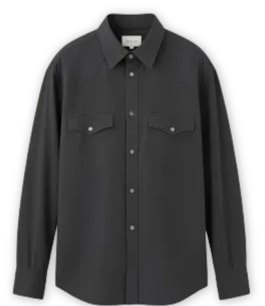
셔츠ART IF ACTS 차콜 웨스턴 셔츠 가디건TONYWACK 그레이 가디건
가디건TONYWACK 그레이 가디건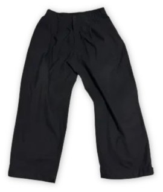
긴바지SONGZIO 블랙 와이드 긴바지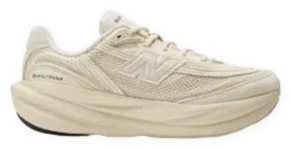
스니커즈NEW BALANCE 베이지 러닝 스니커즈 백팩YOUTH 블랙 백팩
백팩YOUTH 블랙 백팩
최저 8°, 최고 16°예요. 일교차가 커서 겉옷을 챙기세요. 오늘은 자동 백업 추천이에요. 근무 일정표에 없는 날이라 요일로 추정했어요.
무채색 위주에 포인트 컬러는 하나까지만 쓰는 기준으로 날씨에 맞춰 골랐어요.




같은 기준의 다른 조합이에요.


같은 날씨와 격식 기준(무채색 위주, 포인트 컬러는 하나까지)으로 옷장에서 자동으로 고른 조합이에요.
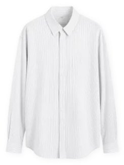
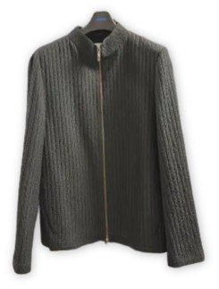


같은 날씨와 격식 기준(무채색 위주, 포인트 컬러는 하나까지)으로 옷장에서 자동으로 고른 조합이에요.


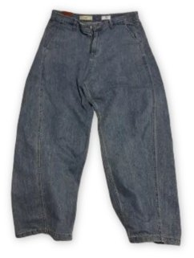


같은 날씨와 격식 기준(무채색 위주, 포인트 컬러는 하나까지)으로 옷장에서 자동으로 고른 조합이에요.


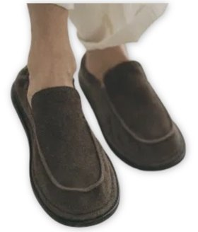

같은 날씨와 격식 기준(무채색 위주, 포인트 컬러는 하나까지)으로 옷장에서 자동으로 고른 조합이에요.
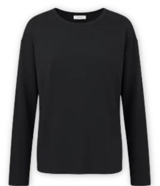


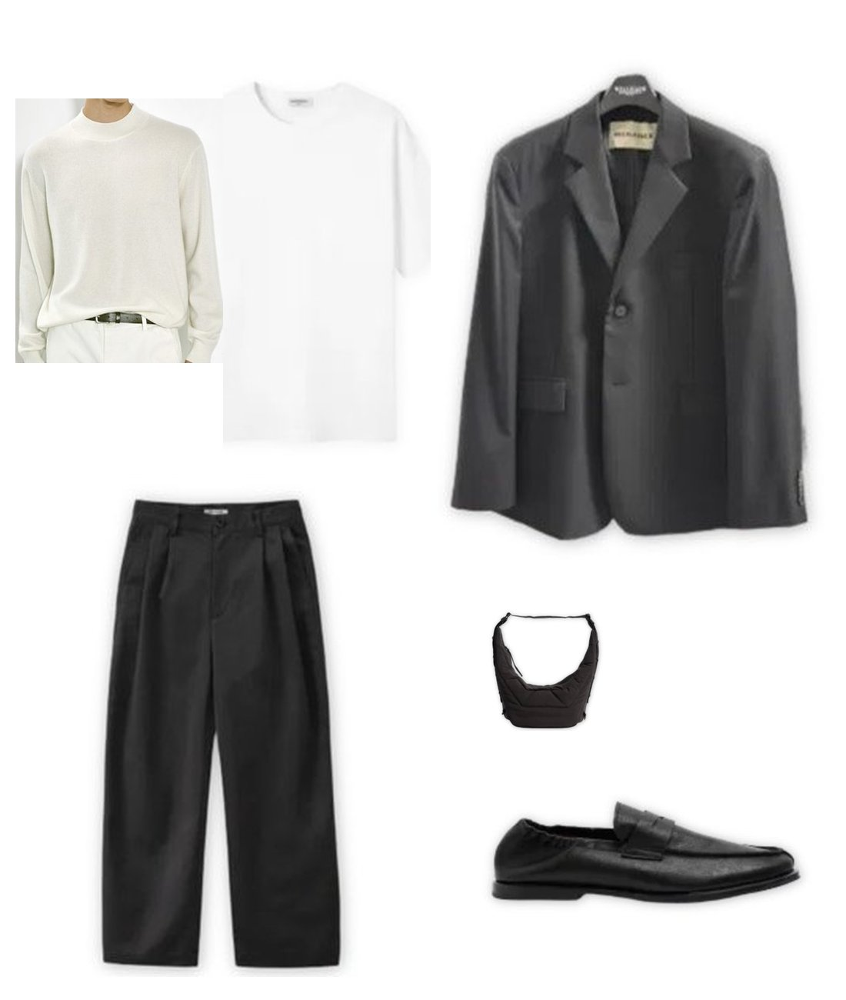
11월 26일 (목)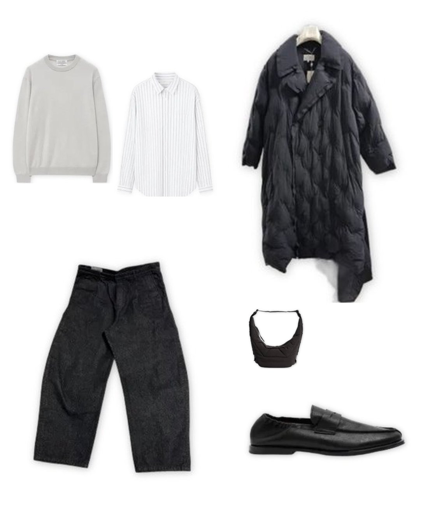
11월 25일 (수)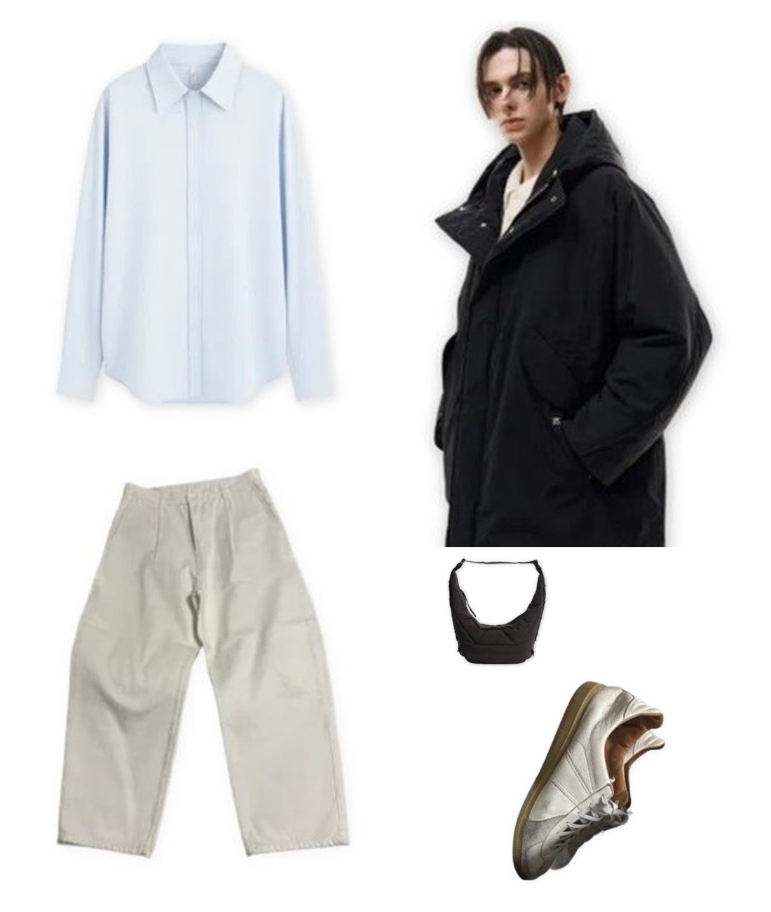
11월 24일 (화) 11월 23일 (월)
11월 23일 (월)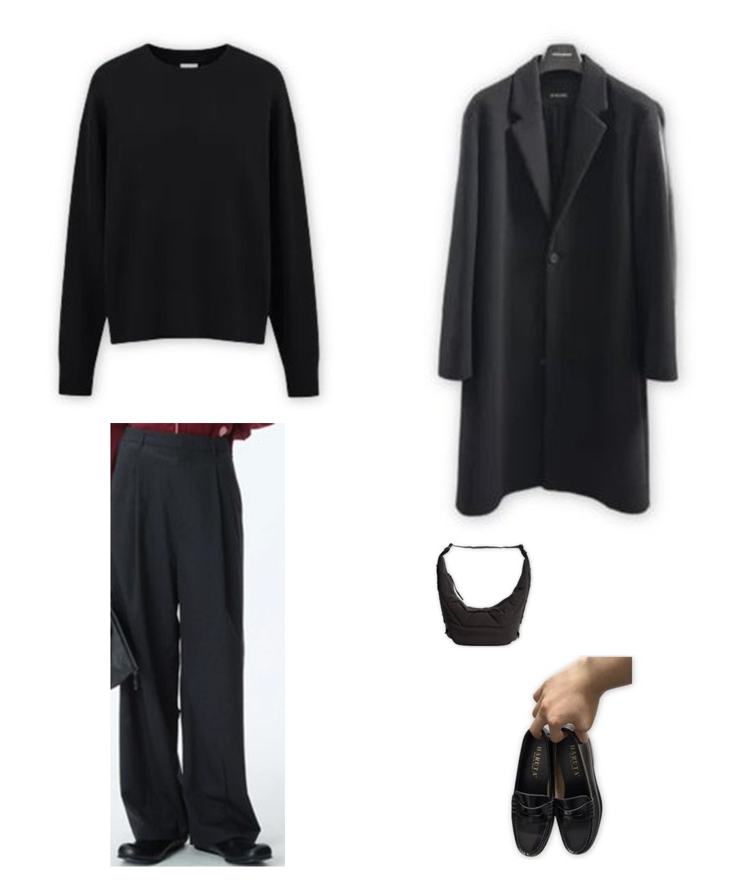
11월 22일 (일)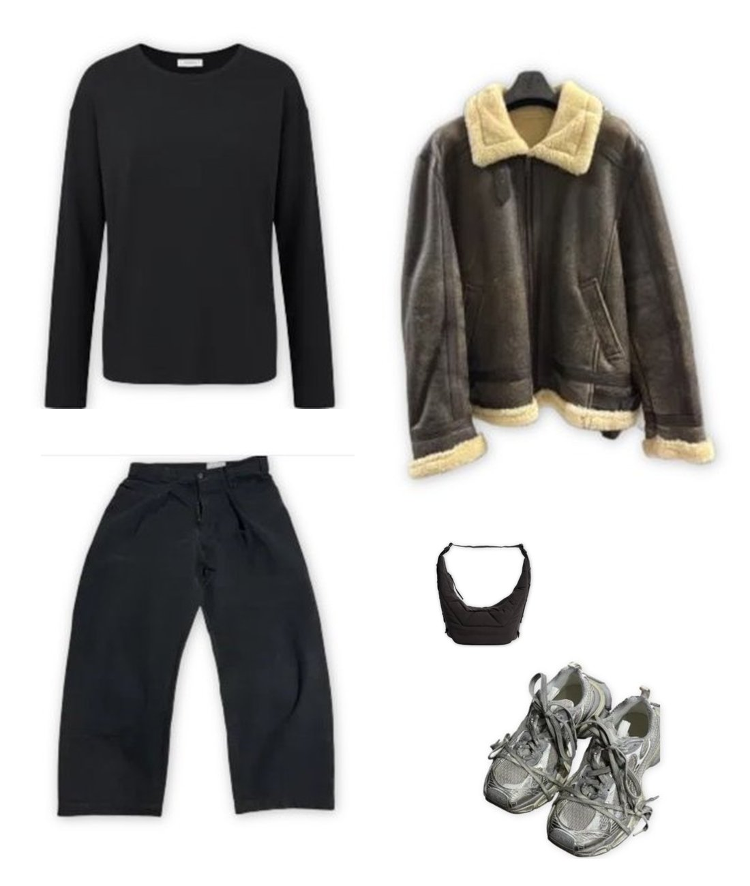
11월 21일 (토) 11월 20일 (금)
11월 20일 (금) 11월 19일 (목)
11월 19일 (목) 11월 18일 (수)
11월 18일 (수)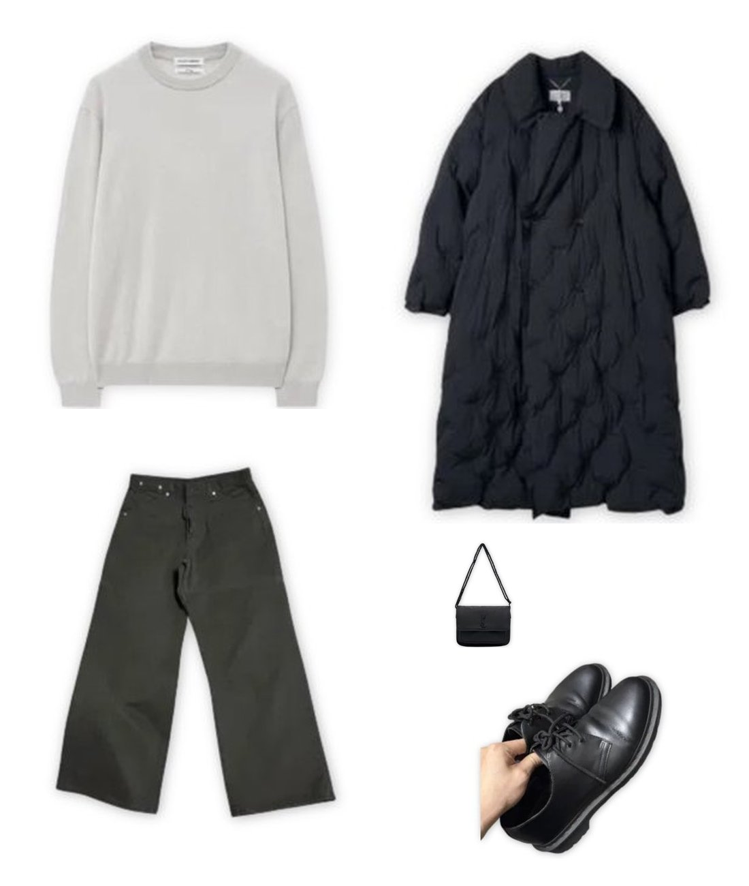
11월 17일 (화) 11월 16일 (월)
11월 16일 (월) 11월 15일 (일)
11월 15일 (일)